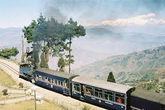
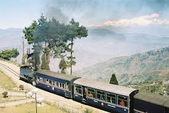

Kushi Sharma
We recently completed three tours with Gopi from BON Boyage. They were all fantastic!we did the street Food,Golden Temple,and wagah Border tours.Gopi led the first two and we went with his brothers fot the wagah border one.all of the tours were very infomative amd fun.The Golden Temple tour was a partcular highlight-gopi had so much infomative to share ,and brought us inside the enormous community kitchen (langar) see behind the scenes and how the massive operation works around the clock.He also brought us to all the best photo spots along the way .Gopi is a really friendly guy and always made sure we were having a great time-he genuinely cares for his guests and it shows!If you are going to be visiting Amritsar,definitely book with Bon Voyage


Ankit Roi
Baga beach has been the most happening place in Goa for quite sometime indeed. Nice shacks, good food and lots of pubs around. Its a place to be for the party lovers. I visited the beach during April, and it was way more crowded than I had expected and was very dirty. There was a lot of litter thrown around, something that used to happen during January. I guess the government has to be more vigilant regarding and the tourists must also take care. Although a newly built public lavatory is there , good for having a quick bath after coming out of beach. I was there every night for dinner and most of the shacks serve good food at a decent price. A must visit for everyone visiting North Goa.


Deepak
Have you ever wanted to see the ALPS in Switzerland but you could not afford it? There is a place closer to home and much cheaper..Cradled in the foothills of the Himalayas, Darjeeling stands out from other hills in its beauty and charm. Occasionally, politics of the region act as an impediment but most of the time it is a peaceful place. It is famous for its Tea and boasts some of the finest boarding schools. It has a lot of hotels and restaurants.Moreover, if you are not very brand conscious you can shop till you drop as Darjeeling is famours for its imoprted clothes from Nepal and Singapore. On a beautiful sunny day, Darjeeling is paradise. The best time to visit is October but tourist seep on pouring in even in the months of November, December and january hopeful to see their first snowfall. A large number of foreigeners are always present at any given time. Yu can see the beautiful range of the infamous Kanchenjunga mountains. There are a lot of things to do in Darjeeling like horseriding,shopping, trekking.,etc What else could you ask for ?
 
